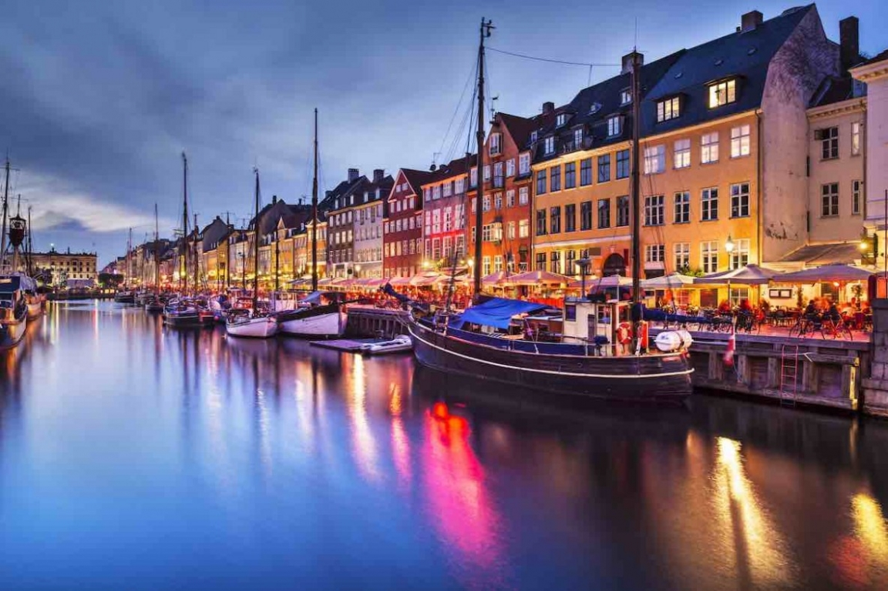
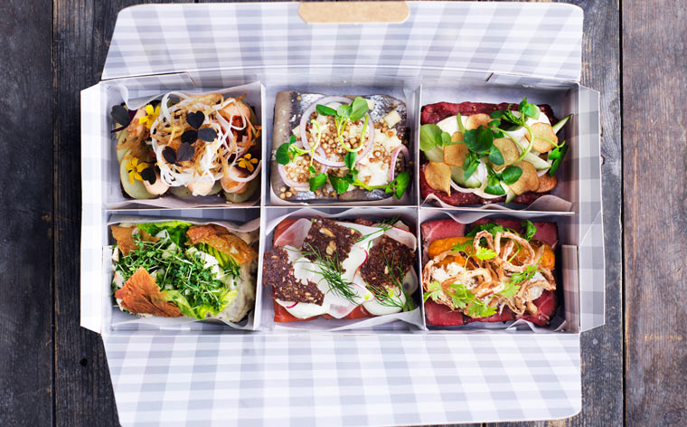

Новая гавань
- Лучше всего конечно сразу-же посетить Новую Гавань, что считается одной из визитных карточек Копенгагена
- Присесть на набережной с парой smørrebrød(национальные бутерброды, разновидности которых в каждом месте просто зашкаливают)
- Попробовать поговорить с местными за кружкой местного разливного, ведь практика языка с носителями это один из главных пунктов обучения
- Отсюда можно с легкостью добраться до королевского дворца - Амалиенборга или до круглой башни - Rundetårn, что в свое время дала шанс Петру Великому покрасоваться перед местными

Еще есть время?